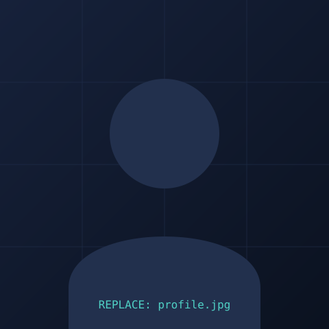

Incident Visibility
Live infrastructure monitoring across global enterprise networks using CA Spectrum, Splunk, and Dynatrace to detect degradation before it impacts service.
// network & infrastructure engineer
Observability & Infrastructure Analyst
Result-oriented network and infrastructure engineer with 4+ years running production support, high-severity incident response, and large-scale deployments across global private data networks — expert in Layer 2/3 routing (BGP, OSPF, EIGRP, TCP/IP), optical transport troubleshooting, and using automation to keep 24/7 mission-critical environments online.

// replace assets/images/profile-placeholder.svg
with assets/images/profile.jpg
A chronological record of production ownership, from first-responder network rapid-response to end-to-end observability of global data networks.
ICE Data Services
ATOS IT Global Solutions
Real-time visibility into production systems is the core of the current role. The focus is on turning telemetry from monitoring platforms into fast, correct incident response — reducing time-to-detect and time-to-resolve across global infrastructure.
Live infrastructure monitoring across global enterprise networks using CA Spectrum, Splunk, and Dynatrace to detect degradation before it impacts service.
Working with BigPanda for event correlation, cutting through alert noise to surface the root incident driving related symptoms across the environment.
Python, Bash, and Ansible (YAML) scripts that streamline recurring diagnostic and remediation tasks, shrinking repair time and manual operational overhead.
Structured RCA on production incidents paired with disciplined change governance, so fixes are durable rather than repeated.
Alongside production network operations, hands-on security training through guided CTF-style challenges — building practical offense-informed-defense skills that carry over into incident triage and RCA.
Completed the Advent of Cyber 2025 challenge track — a hands-on series covering practical offensive and defensive security techniques.
IP Networking, TCP/IP, BGP, OSPF, EIGRP, MPLS, ISIS, SDN, STP, RSTP, Network Topologies, LAN/WAN
Optical Networks, DWDM transmission systems, Layer 2/3 routers & switches, Firewalls, VPNs, Data Center Infrastructure
Element Management Systems (EMS), Network Management Systems (NMS), CA Spectrum, Splunk, Dynatrace, BigPanda
Python, Bash, Ansible (YAML), AWS (EC2, VPC), Git, Bitbucket, Scripting
Production Incident Management, Root Cause Analysis (RCA), Service Level Objectives (SLOs), Tier 1/2 Network Support, Change Governance
Cisco
BigPanda
B V C Engineering College, Andhra Pradesh — 2021